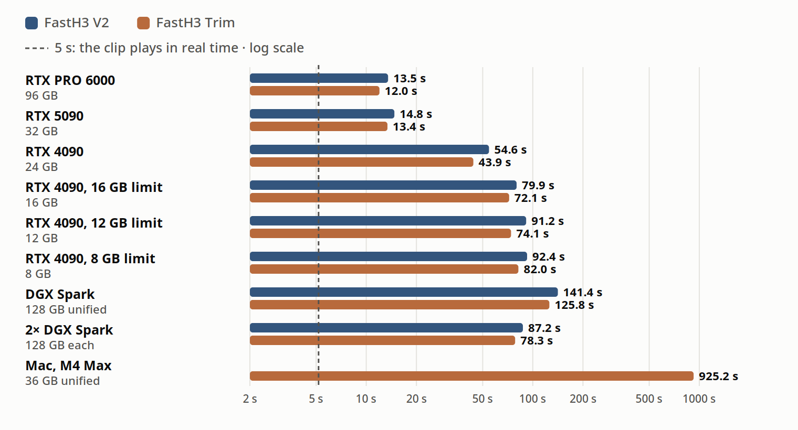
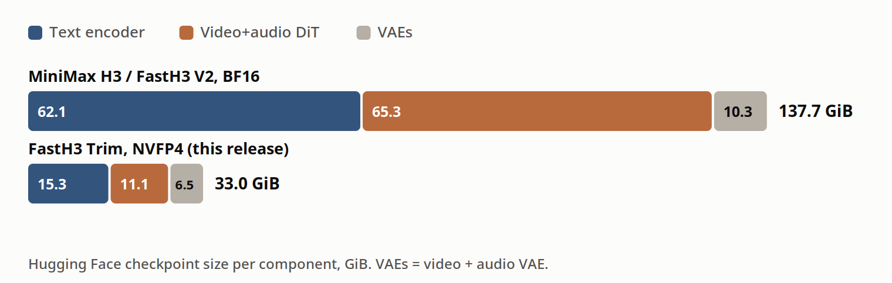
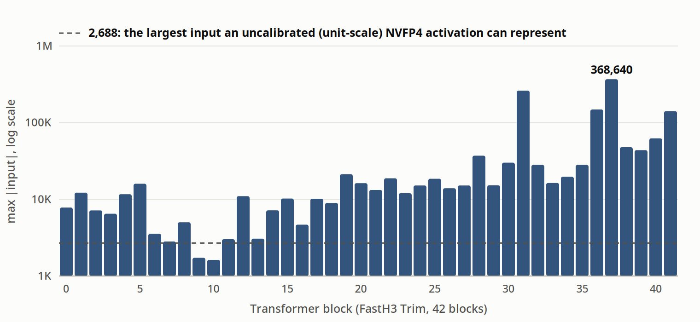
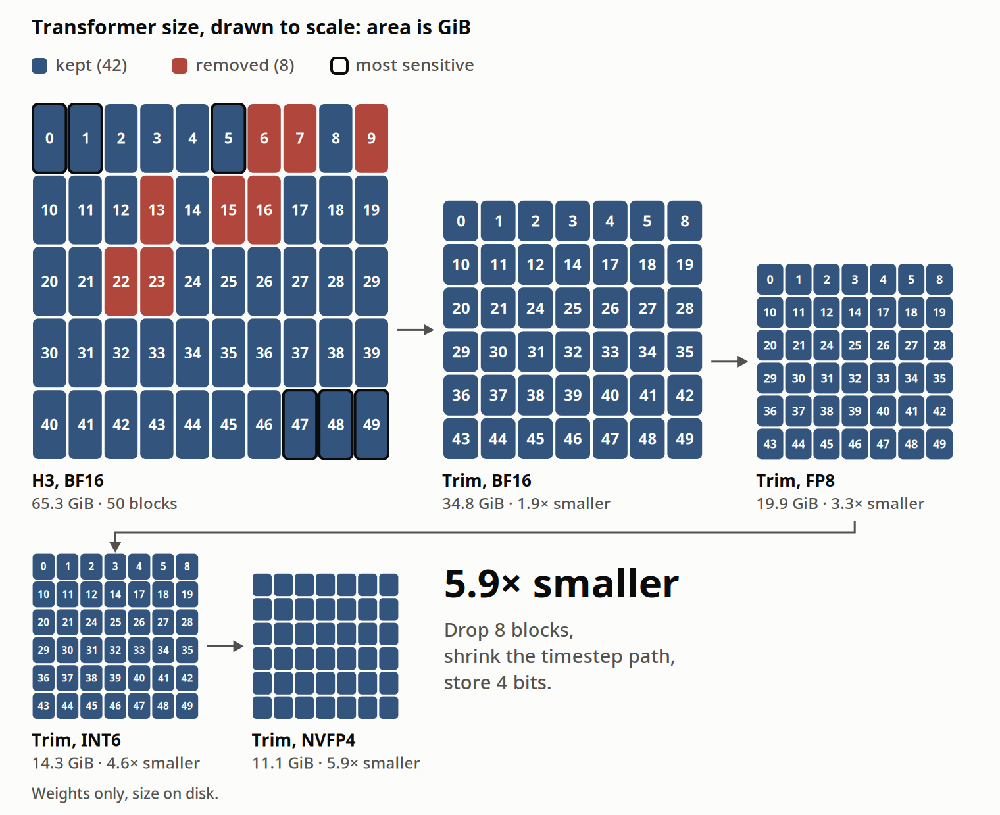
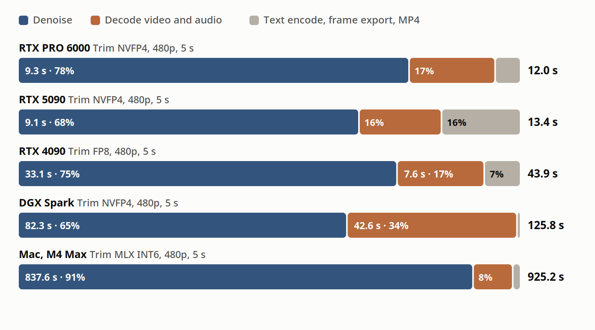

FastH3 V2八步生成带同步音频的视频，八步就超过base H3的质量：此前这需要数据中心GPU，权重138 GiB。现在它跑进了单台消费级机器：RTX 5090 13.4秒出5秒480p片段，RTX 4090用FP8也能跑，连Mac都能跑INT6版。
怎么做到的：三个网络分别瘦身，NVFP4逐层校准activation scale防裁剪，5090上DiT常驻显存只流式搬文本编码器。另有实验性剪枝版FastH3 Trim，去掉8个block再小一截。下面拆数据、看方法。
FastH3 V2八步生成带同步音频的视频，八步就超过base H3的质量。此前它要数据中心GPU：权重138 GiB。现在FastH3 V2跑在单台消费级机器上：RTX 5090、RTX 4090、RTX PRO 6000、DGX Spark或Apple Silicon Mac。同时发布FastH3 Trim，实验性小版本，去掉50个transformer block中的8个，跑得更快。
量化方案按硬件分：Blackwell GPU与DGX Spark用NVFP4，RTX 4090及显存更小的卡用FP8，Apple Silicon用INT6。每层FP4的activation scale都在1000条prompt上校准，大activation不被裁掉。FastH3 Trim比base H3小4.2倍，每台设备上都比V2快，最低8 GB显存可跑，质量代价很小。两个模型都是八步蒸馏，后续版本预期质量更高、模型更小。
同一prompt、每台机器一行：左为FastH3 V2、右为FastH3 Trim，832×480、5秒、带音频。RTX 5090（32 GB，NVFP4）：V2 14.8秒，Trim 13.4秒；RTX PRO 6000（96 GB，NVFP4）：13.5秒 / 12.0秒；RTX 4090（24 GB，FP8）：54.6秒 / 43.9秒；DGX Spark（128 GB统一内存，NVFP4）：141.4秒 / 125.8秒；Mac M4 Max（36 GB统一内存，INT6）：Trim 925.2秒。
每台机器报两个数：5秒832×480片段与5秒1344×768片段，都带音频；端到端热机时间，从prompt到MP4落盘：文本编码、八步去噪、视频音频解码、导出。每个数是两个prompt各跑两次的中位数。完整数字：RTX PRO 6000，480p 13.5/12.0秒，768p 36.5/32.5秒；RTX 5090，14.8/13.4秒，38.6/35.4秒；RTX 4090，54.6/43.9秒，154.6/132.8秒；4090限16 GB，79.9/72.1秒，153.7/139.9秒；限12 GB，91.2/74.1秒，170.7/147.1秒；限8 GB只有Trim 82.0秒；DGX Spark 141.4/125.8秒，768p Trim 340.1秒；双DGX Spark 87.2/78.3秒；Mac M4 Max Trim 925.2秒。

H3是三个网络：Qwen3-VL文本编码器读prompt，50 block的扩散transformer（DiT）同时给视频音频latent去噪，两个VAE把latent解码成帧和声音。BF16下权重共137.7 GiB，一张32 GB的RTX 5090连DiT都装不下。每个网络单独瘦身。

文本编码器62.1 GiB降到15.3 GiB：H3只读64层Qwen3-VL第50层的hidden state，从不生成文本，所以去掉最后14层和语言模型头，H3用的特征不变；剩下的线性层存成NVFP4。Transformer BF16下65.3 GiB：V2把attention、MLP、稀疏attention gate权重存成NVFP4（无FP4支持的GPU用FP8）；Trim再去掉8个block，每个block的timestep投影换成rank-16分解，NVFP4下11.1 GiB。VAE 10.3 GiB降到6.5 GiB：视频解码用蒸馏的26 block轻量视频VAE，latent接口与H3 VAE相同，加载INT8权重，占2.3 GiB显存，所有设备用同一个。
尺寸决定速度：32 GB的卡上，问题是DiT能不能在请求之间一直待在显存里。能，请求之间只搬文本编码器。
第一版FP4导出只量化了MLP（数据中心GPU用的设置），在5090上DiT还有20 GB：单是BF16的attention投影就占9.7 GB，文本编码器挤不下。每次请求都把DiT搬去主机内存再搬回：480p片段26.4秒，768p根本装不下。
attention和gate也进NVFP4后，DiT 11.1 GiB常驻GPU，文本编码器逐层流式进卡：同样480p 13.4秒，768p能跑了。
PyTorch的pinned内存分配器把每块按2的幂取整，2.87 GiB的FP4权重占了5.06 GiB主机内存，在60 GB的云容器里直接被杀掉。改成每个模块cudaHostRegister精确尺寸的buffer，只用2.90 GiB。
RTX 4090没有FP4 tensor core，用FP8：8 bit权重、每输出通道一个scale，8 bit activation、每token一个scale。PyTorch这种scale的FP8矩阵乘在4090上约70 TFLOPS，比BF16的约160 TFLOPS慢；per-tensor FP8 kernel能到220到305 TFLOPS，所以用单位scale调用，再把两个scale向量fuse到输出上一次应用：结果与per-token、per-channel scale一致，比per-tensor scale贵5% 到10%。
另外三处改动把4090干到43.9秒：稀疏attention，score计算的query/key量化到INT8，value留BF16，fine attention kernel快1.6倍，相对误差约0.6%；文本编码器经精确尺寸pinned buffer逐层进GPU，一个fused kernel展开NVFP4权重；VAE用所有设备同一个INT8轻量VAE，加fused反量化，Q/K/V投影共享一个量化输入，解码帧与未优化路径逐bit一致。
16 GB、12 GB、8 GB三档是在同一张4090上限显存测的：两个模型都进12 GB，Trim进8 GB；真实小显存卡会更慢。
DGX Spark的128 GB统一内存装下文本编码器、transformer、两个VAE，请求之间什么都不搬；用和5090同样的NVFP4 checkpoint与轻量VAE，两台Spark用序列并行分一个请求。此前四步预览模型在单台Spark上5秒片段要243秒，现在八步模型去噪步数翻倍反而更快。
Apple Silicon上两个模型都跑MLX，INT6权重，配NVFP4文本编码器与轻量VAE。
NVFP4每16个值一组存成4 bit浮点、共享一个8 bit scale，再加每tensor一个scale定整体范围。权重的per-tensor scale从权重本身算；activation的必须在数据到来前固定。最简单的单位scale覆盖到6×448=2688的量级，而H3的activation大得多。

42个block里40个的MLP输出投影输入超过2688，block 37达到368640，是上限的137倍，单位scale每次前向都裁掉这些值。所以做校准：1000条prompt跑完八步采样，记录每个线性层的最大输入，checkpoint里每层存一个静态scale。Trim共294个校准层，覆盖attention投影、MLP、稀疏attention gate；把V2的NVFP4配方从MLP扩展到每个量化层。
剪枝是通向更小模型的路：去掉测出来最不重要的block，模型更小更快，但会带走一部分学到的东西。Trim是第一步。

第一版剪枝模型按activation选block，明显好过等间隔删除。用teacher指导恢复后，再用DMD压采样步数：运动连贯、细节、prompt服从都偏弱；量化感知蒸馏（QAD）在并排对比里没赢过训练后量化。
Trim直接测每个block：从base H3出发，一次跳过一个block，记录视频音频预测变了多少。4个例子（运动、说话、音乐、声音事件）× 3个噪声水平，共600次测量；每个block按它在任一条件下造成的最大变化排名，视频音频任一重要的都保留。首尾block变化最大，去掉的8个全在网络前半。
H3经AdaLN投影把扩散timestep条件注入每个block：2688维时间embedding映射到6个调制向量，50个block的这些投影BF16下占24 GiB。但输入只是timestep这个单数的光滑函数，用不满2688维。Trim把投影换成一个共享的2688→16基加每个block一个小投影；分解后的权重存FP16，BF16的重建误差大约大1.7倍。
新的42 block模型直接用八步DMD2训练，目标函数沿用V2。Base H3同时初始化frozen teacher与可训练critic，attention 80% 稀疏。采样timestep：999、874、749、624、500、375、250、125。
RTX PRO 6000上所有模型常驻显存，去噪占12.0秒里的78%。RTX 5090去噪一样快（9.1秒），总13.4秒，因为只有文本编码器和解码器在host与GPU之间搬。RTX 4090没有FP4 tensor core，跑FP8且每步从主机内存流式搬部分transformer，去噪占43.9秒里的33.1秒。DGX Spark上视频解码占三分之一（42.6秒），是下一个要优化的阶段。Mac上去噪占91%，因为attention还跑在reference路径而非调优过的Metal kernel。

FastH3 Trim是实验性的：复杂场景细节可能不如V2，质量优先用V2。显存档位是模拟的：16/12/8 GB数是在4090上限显存测的，真实同显存卡会更慢。
模型按硬件与runtime分仓库：RTX 5090 / RTX PRO 6000 / DGX Spark用NVFP4版V2与Trim；RTX 4090及8 GB起的卡用FP8版；Apple Silicon用MLX INT6版；另有ComfyUI checkpoint与BF16源权重。都在FastVideo组织下，多卡数据中心serving继续沿用数据中心版NVFP4 V2。消费版仓库自带NVFP4文本编码器、轻量VAE与采样schedule的fastvideo_inference.json，FastVideo自动读取。
单张RTX 5090的启动代码：
import os
from huggingface_hub import hf_hub_downloadTrim版把仓库换成FastVideo-FastH3-Trim-8-Step-NVFP4，去掉AdaLN table那行。
参考：https://haoailab.com/blogs/fasth3-rtx/